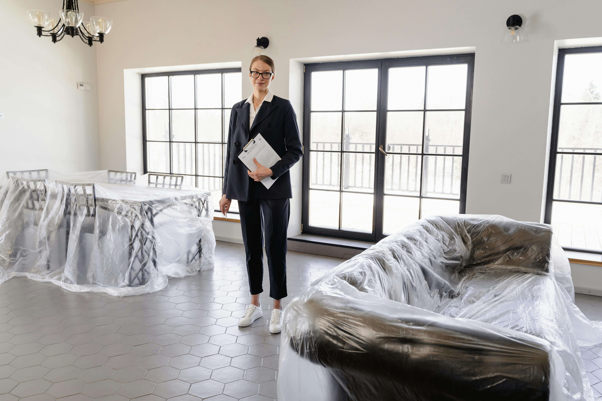

(833)
PROBAID
7762243

WHY SOME HOMES SIT FOR MONTHS IN PROBATE AND HOW I GET THEM SOLD
Probate real estate can feel like it moves at a snail’s pace. The legal side has its own structure and timeline, but when it comes to the property, delays are usually avoidable. Every week a home sits unsold, the estate loses money. Bills add up, insurance risks increase, and family stress grows.
Yet, I often see probate properties sit for months, sometimes even over a year, untouched and unlisted. No showings. No offers. No progress. And the reason is rarely the court or attorney. More often, the problem is the real estate side.
So why does it happen? And how do I get those homes sold when they seem stuck? Here’s what I’ve learned from turning inactive probate properties into successful closings.
NO REAL PLAN FOR THE PROPERTY
The first and most common reason a home sits too long is that no one has created a clear plan. Sometimes the executor thinks they are waiting for the attorney. The attorney may be waiting for the executor. Meanwhile, the family has no idea what should happen next. With no plan in place, the house just sits.
When I step into a case, the first thing I do is establish structure. I set a timeline that explains:
Who is responsible for property access
When the cleanout will happen
What vendors need to be scheduled
When the listing will go live
By laying out clear steps, I get everyone aligned and moving forward. Probate real estate is complicated enough. Without a plan, things drag endlessly. With a plan, everyone understands their role, and the property starts progressing toward a sale.
AGENTS WHO DON’T UNDERSTAND PROBATE
Another major reason homes stall is that the wrong agent was hired. A probate property is not the same as a standard sale. But I see many homes listed by agents who don’t understand the process.
These are the mistakes I see all the time:
Listings written with the wrong language
No mention of court confirmation when it is required
No disclosure of probate status in the MLS
Unrealistic timelines that clash with legal deadlines
These errors scare away buyers, frustrate families, and ultimately waste months. When escrow stalls, attorneys are left cleaning up mistakes that never should have happened.
I do things differently. I make sure the listing includes proper disclosures, that buyers and their agents understand the probate requirements, and that the timeline works with the court’s schedule. I educate everyone involved early, so there are no surprises. That prevents deals from falling apart halfway through.
PROPERTIES THAT WERE NEVER PREPPED TO SELL

I cannot count how many times I have walked into probate homes where nothing has been done. Trash piles in every room. Overgrown yards. No lock changes. No insurance. And worst of all, no photos or comps prepared. Meanwhile, months have passed with no progress.
It is not about making the property perfect. But it does need to be presentable, safe, and market-ready. That is where I step in. I coordinate:
Junk removal and cleanouts
Lock changes for security
Hazard and vacancy insurance
Professional photography
Basic staging when appropriate
I move quickly to make the property ready for buyers. I don’t wait for perfection. I make the home ready now, so it can be listed and sold without delay.
PRICING THAT WAS NEVER BASED ON REALITY
Unrealistic pricing kills more probate sales than almost anything else. Sometimes the heirs think the property is worth far more than it is. Other times, the agent simply does not run accurate comps or avoids the tough pricing conversation.
When homes are priced too high, they sit on the market. Weeks turn into months. Buyers assume something is wrong with the home and lose interest. Eventually, the estate lowers the price but by then, time and money have been lost.
I avoid this by giving families data-backed pricing from the start. I use:
Comparable home sales
Market trends
Buyer demand reports
Holding cost calculations
I explain not just what the property is worth today, but what it will cost the estate every month it sits unsold. That helps heirs see the bigger picture. My goal is never to undersell. My goal is to sell smart. Fair pricing attracts offers, shortens timelines, and protects the estate’s equity.
NO ONE DRIVING THE DEAL FORWARD
The most damaging reason probate homes sit for months is simply that no one is pushing the deal forward. The agent lists the home, posts it online, and waits. Weeks pass. No updates. No adjustments. No urgency. It becomes a passive listing with no energy behind it.
That is not how I work. I treat every probate file like a clock is ticking, because it is. Every day matters for the estate and the attorney’s timeline.
Here is how I drive momentum:
Weekly updates to attorneys and executors
Regular check-ins with buyer agents and interested parties
Adjustments to strategy when needed
Proactive solutions for problems that arise
I never let a probate property sit idle. If something stalls, I step in, identify the problem, and resolve it.
THE REAL COST OF DELAY
It is important to understand just how costly delays can be in probate real estate. Every month a property sits unsold, the estate loses money through:
Mortgage payments
Property taxes
Utility bills
Maintenance and landscaping costs
Insurance premiums
Risk of vandalism or damage
If a home sits for six months, those costs can total tens of thousands of dollars. That money comes directly out of the estate, reducing what heirs receive.
That is why my approach focuses on speed and precision. The faster I prepare the home and get it listed, the sooner it sells, and the more equity the estate protects.
WHY ATTORNEYS BENEFIT FROM THIS APPROACH
Attorneys already have enough to handle with court filings, deadlines, and client communication. When the property side stalls, it creates more work for the attorney. Heirs start calling with complaints. Executors ask legal questions that have nothing to do with law. Suddenly, the attorney is stuck managing problems that belong to the real estate side.
By stepping in early, I prevent this. I take responsibility for everything related to the property, keep heirs informed, and provide attorneys with clear updates. That allows attorneys to focus on their role while I keep the real estate moving forward.
BOTTOM LINE
Probate homes do not sell themselves. When they sit too long, they lose value, drain the estate’s funds, and frustrate everyone involved.
The reasons are clear: no plan, agents unfamiliar with probate, lack of preparation, unrealistic pricing, and no one driving the process. But with the right probate-trained agent, these problems disappear.
I step in with a clear plan, prepare the home quickly, price it realistically, and keep pressure on until it sells. That is how I protect the estate, reduce stress for the attorney, and keep probate cases moving forward without delay.
If you have a property that has been sitting too long, I am ready to step in and get it moving.
FAQS
WHY DO PROBATE HOMES OFTEN SIT UNSOLD FOR MONTHS?
Most probate homes sit unsold because there is no clear plan, the wrong agent is hired, the property is not prepared, or pricing is unrealistic. Without a probate-trained agent, delays pile up.
WHAT COSTS ADD UP WHEN A PROBATE PROPERTY SITS TOO LONG?
Every month a home sits unsold, the estate pays holding costs like mortgage, taxes, utilities, landscaping, and insurance. These expenses can quickly drain the estate’s funds.
HOW DOES HIRING A PROBATE-TRAINED AGENT HELP AVOID DELAYS?
A probate-trained agent understands the legal process, prepares the home quickly, sets realistic pricing, and drives momentum with weekly updates. This keeps the property moving toward a sale.
CAN A PROBATE HOME SELL WITHOUT BEING FULLY RENOVATED?
Yes. A probate property does not need to be perfect. With basic cleanout, security, and professional presentation, it can attract buyers even if upgrades are not completed.
HOW DOES REALISTIC PRICING AFFECT PROBATE SALES?
Realistic, data-backed pricing attracts serious buyers and shortens timelines. Overpricing leads to months of inactivity and lower offers later, which reduces estate equity.
READY TO GET YOUR PROBATE PROPERTY SOLD?
Don’t let another month pass with the property sitting idle. Reach out now and I’ll step in with a clear plan, prepare the home, and drive the process forward until it sells.
 833PROBAID.com
833PROBAID.com
 Info@833PROBAID.com
Info@833PROBAID.com
Because in probate, every day a property sits unsold is a day the estate loses money—and I’m here to stop that.